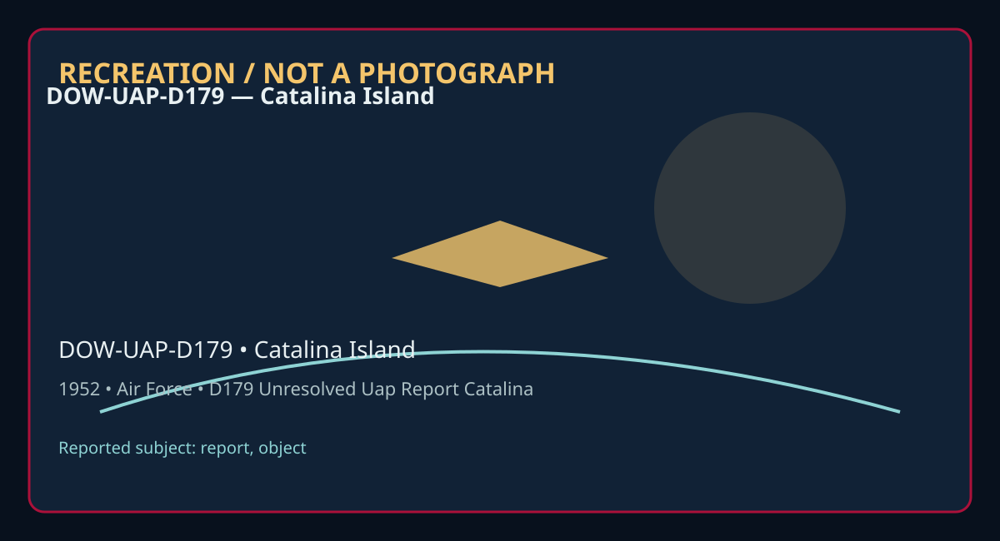

Release 07 / archival case file / DOW-UAP-D179
D179 Unresolved Uap Report Catalina Island 1952
This d179 unresolved uap report catalina places a report, object thread in a 1952 Catalina Island record.
ID: DOW-UAP-D179
Filename:
DOW-UAP-D179_Unresolved_UAP_Report_Catalina_Island-1952.pdfDate marker: 1952
Location: Catalina Island
Agency or collection signal: Air Force
Pages read: 2

RECREATION / NOT A PHOTOGRAPH. The diagram is an interpretive editorial aid, not source imagery.
What this document says
The opening page's extracted text begins: “;"I --' .. Authority: NND 923007”
Across the 2 pages, the recurring terms are report, object. Those details belong to this file, not to a generic case template. Page-level reading follows:
- Page 1: ;"I --' .. Authority: NND 923007
- Page 2: ,.. ' AF.FORM 112--;•PARl I • 55\F\ED /0 ;,.__ ... APPROVED I JUNE 1948 COUNTRY United States ____;_:_____________,___________.,________---=---------I~r\ ... AIR INTELLIGENCE INFORMATION REPORT Unidentified flying Q,jects Reporting AREA REPORTE!l,ON IFROM (Agn,cgJ i:>outhern California 807th Jir Dase Group, ?rarch Air Force Base DATE-OF REPORT IDATE Of INFOR
Historical context and disclosure schema
Read in context, this record belongs to the 1952 information environment: Air Force paperwork, a Catalina Island setting, and the reporting conventions visible in the source. Its broader disclosure value is procedural as well as anecdotal: it shows how an observation, material question, investigation, or analytical program was routed, described, and preserved. That makes it comparable to other Release 07 records without collapsing unlike evidence into one event.
Evidence limits
The source establishes that this document exists and records what its authors or quoted witnesses wrote. It does not, by itself, prove the identity, performance, origin, or physical reality of the reported subject. Extraction preserves wording but cannot restore missing attachments, authenticate provenance, or independently validate testimony. Interpretations beyond the page-specific record remain hypotheses.
Source: supplied PDF in research/tranche-07. This article is a research aid, not a claim that the reported object was non-human.